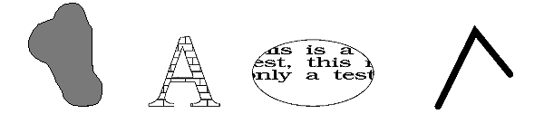

Paths provide several useful drawing techniques including:
These techniques are respectively illustrated in the following figures: 
Drawing Techniques Achieved with Paths
A path is similar to an area, but there are fundamental differences between the two. The following table describes their similarities and contrasts.
┌──────────────────────────────┬──────────────────────────────┐│Paths │Areas │ ├──────────────────────────────┼──────────────────────────────┤ │Functions that define a path │Functions that define an area │ │are bracketed by GpiBeginPath │are bracketed by GpiBeginArea │ │and GpiEndPath. │and GpiEndArea. │ ├──────────────────────────────┼──────────────────────────────┤ │Paths are defined in world │Areas are defined in world │ │coordinates. │coordinates. │ ├──────────────────────────────┼──────────────────────────────┤ │Paths can be modified before │Areas are displayed │ │being displayed or used for │immediately on completion. │ │clipping. │ │ ├──────────────────────────────┼──────────────────────────────┤ │Paths can be used by │Areas cannot be used as │ │applications to perform │clipping regions. │ │clipping. │ │ ├──────────────────────────────┼──────────────────────────────┤ │Paths can be converted into │Areas cannot be converted into│ │graphics objects called │regions. │ │regions. │ │ ├──────────────────────────────┼──────────────────────────────┤ │Six operations can be │Only two operations can be │ │performed on paths, each │performed on areas (specified │ │requiring a separate function:│with options when creating the│ │ │area): │ │Outline │ │ │Fill │Outline │ │Modify │Fill │ │Stroke │ │ │Convert to clip path │ │ │Convert to region │ │ └──────────────────────────────┴──────────────────────────────┘